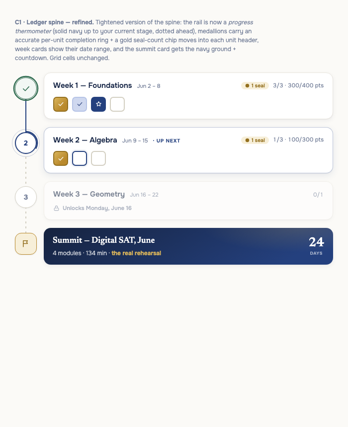
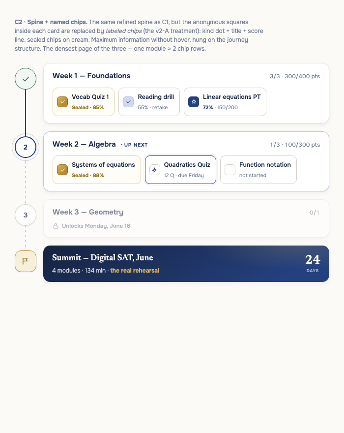
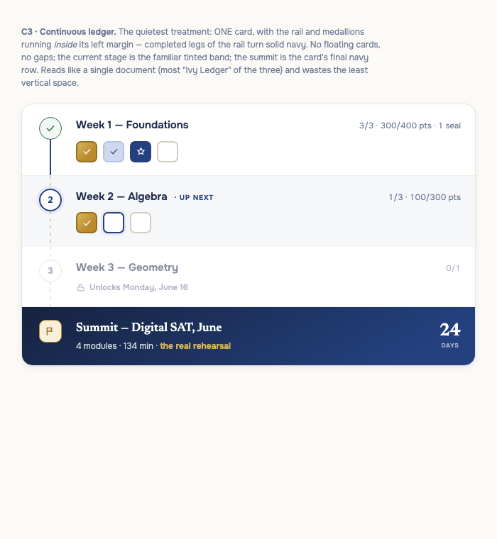
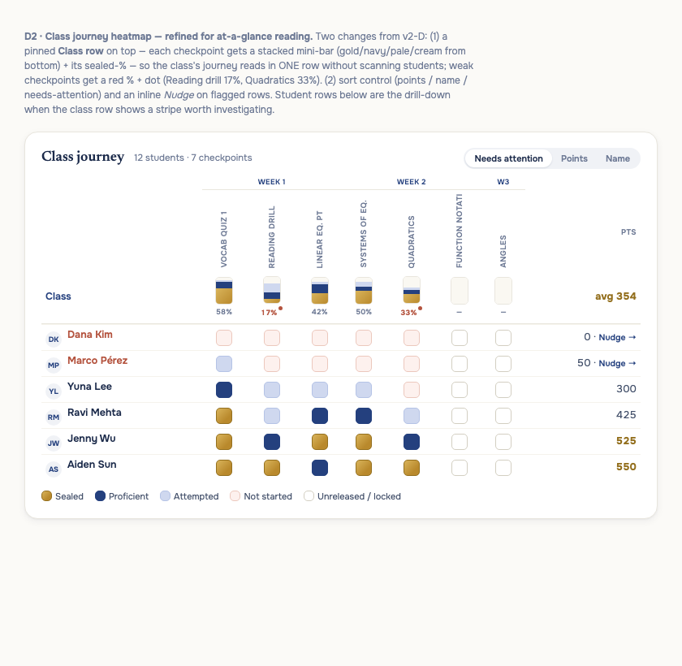

All three share the refinements: progress-thermometer rail (solid navy behind you, dotted ahead), accurate medallions, seal counts in unit headers, and a navy summit card with the test-day countdown. They differ in texture and density.



"Educator can see the class's journey as a heatmap at a glance instead of going in to see every student" → the pinned Class row now carries the glance: a stacked mini-bar + sealed-% per checkpoint, with weak ones flagged red (Reading drill 17%, Quadratics 33%). Student rows are the drill-down, sorted needs-attention-first with inline Nudge. Would live as a Class | Students toggle inside the educator Journey view.
